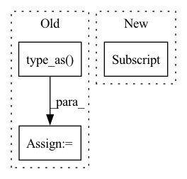

Pattern ID :14741
Before Change
// transformer feature fusion
pc_feats = self.corr_module(pc_feats, part_valids) // [B, P, C]
// MLP predict poses
instance_label = instance_label.type_as( pc_feats)
feats = torch.cat([pc_feats, instance_label], dim=-1) // [B, P, C+P]
quat, trans = self.pose_predictor(feats)
pred_dict = {After Change
B, P, N, _ = part_pcs.shape
valid_mask = (part_valids == 1)
// shared-weight encoder
valid_pcs = part_pcs[valid_mask] // [n, N, 3]
valid_feats = self.encoder(valid_pcs) // [n, C]
pc_feats = torch.zeros(B, P, self.pc_feat_dim).type_as(valid_feats)
pc_feats[valid_mask] = valid_featsIn pattern: SUPERPATTERN
Frequency: 5
Non-data size: 3
Instances Fragment ID: 48498389
Project Name: wuziyi616/multi_part_assembly
Commit Name: cb586c4febe6508914e90c32a5b69e70aecbbc4e
Time: 2022-03-07
Author: dazitu616@gmail.com
File Name: multi_part_assembly/models/pn_transformer/network.py
M Class Name: PNTransformer
N Class Name: PNTransformer
M Method Name: forward(2)
N Method Name: forward(4)
M Parent Class: pl.LightningModule
N Parent Class: pl.LightningModule
M File Name: multi_part_assembly/models/pn_transformer/network.py
N File Name: multi_part_assembly/models/pn_transformer/network.py
M Start Line: 71
M End Line: 93
N Start Line: 83
N End Line: 107
Before Change
def inverse_rotation_warp(img, rot, intrinsics, padding_mode="zeros"):
b, _, h, w = img.size()
cam_coords = pixel2cam(torch.ones(b, h, w).type_as(
img) , intrinsics.inverse()) // [B,3,H,W]
rot_mat = euler2mat(rot) // [B, 3, 3]
After Change
world_points = depth_to_3d(torch.ones(B, 1, H, W).type_as(img), intrinsics) // B 3 H W
cam_points = torch.matmul(P, world_points.view(B, 3, -1))
pix_coords = cam_points[:, :2, :] / (cam_points[:, 2, :] .unsqueeze(1) + 1e-7)
pix_coords = pix_coords.view(B, 2, H, W)
pix_coords = pix_coords.permute(0, 2, 3, 1)
pix_coords[..., 0] /= W - 1 Fragment ID: 48498390
Project Name: jiawangbian/sc_depth_pl
Commit Name: 6a50fb9e99035b26acd8d44a2965c6a5b8eaa4da
Time: 2022-08-18
Author: jiawang.bian@gmail.com
File Name: losses/inverse_warp.py
M Class Name: AnonimousClass
N Class Name: AnonimousClass
M Method Name: inverse_rotation_warp(4)
N Method Name: inverse_rotation_warp(4)
M Parent Class:
N Parent Class:
M File Name: losses/inverse_warp.py
N File Name: losses/inverse_warp.py
M Start Line: 275
M End Line: 284
N Start Line: 129
N End Line: 140
Before Change
output_seq, _ = self.seq2seq(pc_feats_seq, target_seq)
output_seq = output_seq.squeeze(2).transpose(0, 1) // [B, P, C"]
// MLP predict poses
inst_label = inst_label.type_as( pc_feats)
feats = torch.cat([output_seq, inst_label], dim=-1)
quat, trans = self.pose_predictor(feats)
pred_dict = {After Change
output_seq, _ = self.seq2seq(part_feats_seq, target_seq)
output_seq = output_seq.squeeze(2).transpose(0, 1) // [B, P, C"]
// MLP predict poses
inst_label = data_dict["instance_label"] .tyas_as(part_feats)
feats = torch.cat([output_seq, inst_label], dim=-1)
quat, trans = self.pose_predictor(feats)
Fragment ID: 48498391
Project Name: wuziyi616/multi_part_assembly
Commit Name: 32e79bcfcdfb8532fbd8f953fc58330b89132be2
Time: 2022-03-27
Author: dazitu616@gmail.com
File Name: multi_part_assembly/models/b_lstm/network.py
M Class Name: LSTMModel
N Class Name: LSTMModel
M Method Name: forward(2)
N Method Name: forward(2)
M Parent Class: BaseModel
N Parent Class: BaseModel
M File Name: multi_part_assembly/models/b_lstm/network.py
N File Name: multi_part_assembly/models/b_lstm/network.py
M Start Line: 78
M End Line: 99
N Start Line: 78
N End Line: 99
Before Change
indexing = "ij"))
grid.requires_grad = False
grid = grid.type_as( x)
vgrid = grid + offsets
vgrid_h, vgrid_w = vgrid.unbind(dim = 1)After Change
vgrid_h, vgrid_w = vgrid.unbind(dim = 1)
vgrid_h = 2.0 * vgrid_h / max(offsets.shape[-2] - 1, 1) - 1.0
vgrid_w = 2.0 * vgrid_w / max(offsets.shape[-1] - 1, 1) - 1.0
vgrid_scaled = torch.stack((vgrid_h, vgrid_w), dim = -1)
Fragment ID: 48498400
Project Name: lucidrains/deformable-attention
Commit Name: 8db7edc4c647e25b0eab43ca2bbab9ccf83fde31
Time: 2022-03-17
Author: lucidrains@gmail.com
File Name: deformable_attention/deformable_attention.py
M Class Name: DeformableAttention
N Class Name: DeformableAttention
M Method Name: forward(3)
N Method Name: forward(2)
M Parent Class: nn.Module
N Parent Class: nn.Module
M File Name: deformable_attention/deformable_attention.py
N File Name: deformable_attention/deformable_attention.py
M Start Line: 90
M End Line: 142
N Start Line: 124
N End Line: 204
Before Change
// update the new smpl_vis
(xy, z) = batch["smpl_verts"][0].split([2, 1], dim=1)
smpl_vis = get_visibility(
xy,
z,
torch.as_tensor(batch["smpl_faces"][0]).type_as(
batch["smpl_verts"]) .long(),
)
in_tensor_dict.update(
{"smpl_vis": smpl_vis.unsqueeze(0).to(self.device)})After Change
in_tensor_dict.update({name: batch[name]})
in_tensor_dict.update({
k: batch[k] if k in batch.keys() else None
for k in getattr(self, f"{self.prior_type}_keys")
})
Fragment ID: 48498380
Project Name: yuliangxiu/icon
Commit Name: 7411bd859a6e83da2c8844ae9fb1fdd7576a082c
Time: 2022-10-01
Author: yuliang.xiu@tuebingen.mpg.de
File Name: apps/ICON.py
M Class Name: ICON
N Class Name: ICON
M Method Name: test_step(3)
N Method Name: test_step(3)
M Parent Class: pl.LightningModule
N Parent Class: pl.LightningModule
M File Name: apps/ICON.py
N File Name: apps/ICON.py
M Start Line: 546
M End Line: 599
N Start Line: 556
N End Line: 559